Erin Anna Marie Myers
Indiana University, Bloomington
Curriculum Vitae
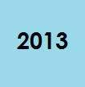
Indiana University, Bloomington, Indiana. Doctor of Philosophy in French Literature (in progress).
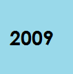
Indiana University. Master of Arts in French Literature (May 2009).
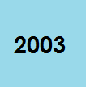
Franklin & Marshall College, Lancaster, Pennsylvania. Bachelor of Arts. Summa cum laude. Biology and French.
Visiting Lecturer and F150 Course Supervisor, Department of French and Italian, Indiana University
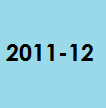
Lecturer in English, UFR Angellier, Université Charles-de-Gaulle Lille III, Villeneuve-d’Ascq, France.
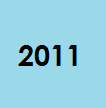
Student Coordinator and Literature Instructor, IU Honors Program in Foreign Languages, Saumur, France.
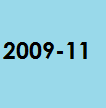
Assistant Instructor, IU Department of French and Italian.
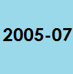
Instructor of French, Penn State Altoona
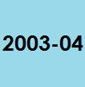
English teacher in primary school (Assistante de langue), Amiens, France.
High School French Assistant (French I, IV, AP) – Part of service-learning course
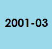
Preceptor, two interdisciplinary general education Foundations courses, F&M:
The Shapes of Nature (Dr. Roger Thomas), Sleep & Dreams (Dr. Carolyn Fay).
Assistant Instructor Orientation Presentations: “Dress to Profess,” “Teaching Reading.”
Kentucky Foreign Languages Conference Presentation: “Lamarck’s Literary Heritage.” 21 April 2013.
Advance College Project Presentation: “Evaluating Student Oral Performance.” April 2013.
IU World Languages Fair Presentation: “Finding ton meilleur look: Everyday French Fashion.”
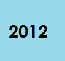
Assistant Instructor Orientation Presentation: “Treating Vocabulary.”
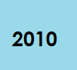
IU Foreign Language Share Fair Presentation: “Building Vocabulary Using an Oncourse Forum.”
Workshop participation: Improvisational Theater for the Foreign Language Classroom. Indiana University.
Society for the Interdisciplinary Study of Social Imagery Conference: “Image of the Hero.” “Homeric Heroes in Laclos’s Dangerous Liaisons.” Colorado Springs, Colorado, 10-12 March 2010.
Dartmouth Summer Institute for French Cultural Studies Participation: “Culture and Religion.”
IU Germanic Studies Conference, “Perceptual Magnets,” presentation:“Flaubert’s Stupid Drum and Slackened Strings.” 21 February, 2009.
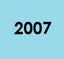
Certificate: The Penn State Course in College Teaching.
- Grace P. Young Graduate Award (IU Department of French and Italian, May 2010)
- Charlotte F. Gerrard Fellowship for graduate studies in French (IU, 2007-2009)
- Pi Delta Phi French Honor Society (F&M, 2003)
- Phi Beta Kappa Honor Society (F&M, 2003)
- Harry S. Butler Award for independent study in France and Switzerland (F&M, 2002)
- Genealogical articles for private clients: “Les Malboeuf, dit Beausoleil” (2011)
- Literary scholarship book chapters for O. Panaïté (2010).)
- "Freedom of Expression in the Federal Republic of Germany". Olivier Jouanjan. Translation from the French for the IU School of Law.
- Academic records for incoming Indiana University Students (three sets).
- Transcribing for hearing-impaired student, IU Disability Services for Students (Spring 2009).
-
Languages
- English
- French
- German
- Italian
Software Skills
-
Services
- FRIT Website Development Committee (2010-2011)
- Graduate and Professional Student Organization Travel Funds Committee (2010)
- Department Hospitality: Café Euro (2008-2009)
- Videoconference Lessons (2) for French 3 and AP French at Lanesville High School (2009)
- French Club Co-Assistant, IU Department of French and Italian (2008-2009)
- CIC Quebec Study Abroad, Laval University, Assistant to the Director (2008). Maintained
- blog: http://quebeccic2008.blogspot.com/.
-
Guillaume Ansart
Indiana University Department of French and Italian, Ballantine Hall 642 1020 E. Kirkwood Avenue, Bloomington, IN 47405-7103 gansart@indiana.edu 812.855.9608 -
Hall Bjornstad
Indiana University Department of French and Italian, Ballantine Hall 642 1020 E. Kirkwood Avenue, Bloomington, IN 47405-7103 hallbjor@indiana.edu -
Oana Panaïté (on sabbatical Fall 2013)
Indiana University Department of French and Italian, Ballantine Hall 642 1020 E. Kirkwood Avenue, Bloomington, IN 47405-7103 opanaite@indiana.edu 812.855.1134 -
Catriona Seth & Kelly Sax
Université Nancy 2, FRANCE catriona.seth@univ-nancy2.fr Kelly Sax (In France Fall 2013) ksax@indiana.edu